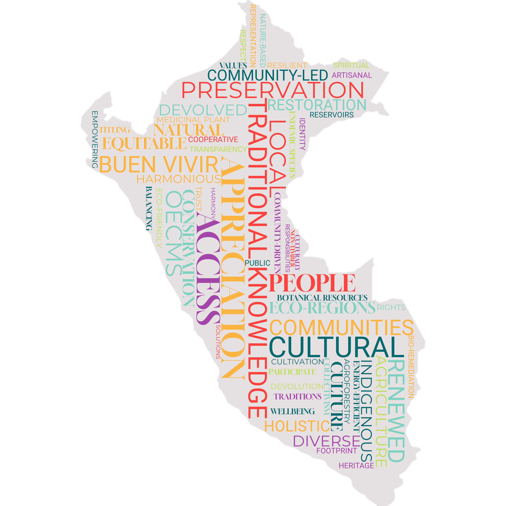

Presentamos tres escenarios normativos (La naturaleza por la naturaleza, La naturaleza para la sociedad y La naturaleza como cultura) y un escenario exploratorio (Business as Usual) de cambio futuro del paisaje en el Perú. Los escenarios normativos pretenden encapsular descripciones de las características colectivamente deseadas de los paisajes futuros en las distintas regiones del país. Por otro lado, el escenario exploratorio busca reflejar un cambio probable del paisaje basado en las tendencias actuales, sirviendo como punto de comparación frente a los escenarios socialmente deseables.
Haga clic en las columnas para ampliar el contenido. Puede hacer clic en varias columnas para comparar escenarios.
La naturaleza por la naturaleza
Para 2060, los paisajes del Perú se consideran entidades vivas y esenciales que merecen protección no solo por su utilidad para los humanos, sino por su valor inherente. Esta transformación surgió de un cambio social a principios del siglo XXI que reconoció el valor intrínseco de la naturaleza como un aspecto fundamental de una vida ética. Esta visión reorientó las prioridades de la gobernanza económica, social y ambiental, alineándolas con un ethos de coexistencia y respeto por la vida en todas sus formas.
Características
Cambio climático: RCP 2.6
 Población: 37.21 millones
Población: 37.21 millones
 Desarrollo económico: 1007 mil millones USD
Desarrollo económico: 1007 mil millones USD
 Perspectiva de valor sobre la naturaleza: Principalmente intrínseca
Perspectiva de valor sobre la naturaleza: Principalmente intrínseca
 Áreas protegidas (proporción del Perú bajo protección): 30 % para 2030
Áreas protegidas (proporción del Perú bajo protección): 30 % para 2030

Cambio de valores y estilos de vida
Al presenciar de primera mano la continua degradación de la naturaleza y el declive de especies características1, debido al cambio climático y a actividades antropogénicas, surge un profundo cambio en los valores sociales. La naturaleza deja de verse como un recurso para explotar y pasa a considerarse una socia en una existencia compartida. Esta perspectiva se consagra en la ley, basándose en el precedente legal que reconoce al río Marañón como entidad con derechos intrínsecos, incluido el derecho a existir y a estar libre de contaminación2. Este concepto de derechos de la naturaleza se difunde mediante iniciativas educativas para mejorar la conciencia ambiental de la población.
En cuanto a los cambios en los estilos de vida, la población adopta comportamientos eficientes en el uso de recursos para reducir el impacto sobre la naturaleza. La proporción de habitantes urbanos alcanza el 92 % para el año 2060 ((1), según SSP1), con personas optando por vivir en asentamientos compactos que ofrecen mejor acceso a servicios y equipamientos. También hay un cambio sustancial en las dietas hacia un mayor consumo de productos vegetales para reducir la presión sobre los ecosistemas derivada de la producción ganadera3. El reconocimiento del valor intrínseco de la naturaleza fomenta una inclusión social más amplia, lo cual impulsa el progreso en la reducción de la desigualdad económica y social, por ejemplo, abordando cuestiones como el empleo desproporcionado de las mujeres en el sector informal (2).
Cambio de prioridades económicas
El desarrollo económico se orienta hacia actividades sostenibles en centros urbanos secundarios fuera de Lima, promoviendo negocios locales ecológicos y reduciendo la dependencia de industrias intensivas en recursos, lo que refuerza la resiliencia comunitaria (3) y genera mayor formalización económica cuyos ingresos permiten un mayor gasto gubernamental en la protección de la naturaleza, reconocida como esencial para la continuidad y el crecimiento de la economía verde4. En general, hay un crecimiento económico moderado, con un PIB per cápita que alcanza aproximadamente 1007 mil millones USD para 2060 (convertido con la paridad de poder adquisitivo de 2017), según lo proyectado en la SSP2 (4).
El sector agrícola adopta técnicas que enfatizan la armonía con la naturaleza, como la agroforestería y las chacras agroecológicas integrales (5,6). El sector de la agricultura orgánica se expande, pues los pesticidas y fertilizantes sintéticos se sustituyen por alternativas naturales, garantizando la productividad del suelo a largo plazo. Sin embargo, estos cambios hacen la producción agrícola más extensa, requiriendo mayor área de suelo para satisfacer la demanda de alimentos. Al mismo tiempo, la reducción de la superficie destinada a la ganadería como respuesta al cambio de dietas compensa en parte esta tendencia. Para disminuir aún más los impactos ambientales, las zonas agrícolas se ubican más cerca de las áreas urbanas para acortar la cadena de suministro y minimizar el desperdicio.
Las políticas forestales se caracterizan por medidas estrictas de protección y restauración, con restricciones severas a la tala de bosques naturales y requisito de transición a especies nativas en bosques de producción (7). De modo similar, las actividades mineras se regulan estrictamente, sin otorgar nuevas concesiones más allá de 2030, sin embargo las operaciones existentes pueden continuar (8). Debido a exigentes requisitos ambientales legales, solo una parte limitada de estas concesiones se ejerce, minimizando el impacto ambiental global. El turismo se orienta hacia actividades centradas en la naturaleza, como la observación de fauna, recorridos por bosques y humedales, y tours de conservación marina, promoviendo activamente una relación más sostenible y respetuosa con la naturaleza (9).
Comunidades indígenas
El bienestar de las comunidades indígenas mejora mediante el fortalecimiento de los derechos sobre la tierra, el aumento de la representación política y la participación en esfuerzos de conservación. En este sentido, el papel de las comunidades indígenas como guardianas ambientales se reconoce formalmente en la ampliación de áreas protegidas con la inclusión de reservas gestionadas por comunidades indígenas (10). Sin embargo, regulaciones más estrictas de uso del suelo pueden generar tensiones cuando las comunidades buscan mantener prácticas agrícolas o de uso de recursos tradicionales. Además, existen políticas específicas para mejorar el acceso a la atención sanitaria, la educación y las oportunidades económicas (11).
Gobernanza, planificación y gestión de recursos
La gobernanza evoluciona para garantizar transparencia y regulación efectiva de las actividades que afectan a los ecosistemas, con un enfoque principal en el control estricto de la contaminación ambiental. La planificación del paisaje prioriza minimizar los impactos humanos sobre la naturaleza, por ejemplo, cuando se planifican desarrollos las autoridades deben considerar por igual los efectos en las personas y en la naturaleza de acuerdo con los derechos de ambos. En este contexto se deroga la modificación de 2023 a la Ley Forestal y de Fauna Silvestre5 y la responsabilidad de la zonificación forestal vuelve al MINAM. Paralelamente, los contratos de concesiones forestales existentes pueden expirar tras sus términos iniciales de 40 años. La gestión de concesiones se alinea con un principio de primacía de la naturaleza, de modo que solo los operadores que demuestren una sólida gestión ecológica renueven sus contratos. Las áreas de concesiones no renovadas quedan bajo gestión estatal y respaldan actividades sostenibles como el turismo de naturaleza de bajo impacto o la agroforestería comunitaria.
Las áreas urbanas de todo el país se planifican mejor para la sostenibilidad, con una tendencia a la densificación y la integración de espacios verdes que reduce la impermeabilización arbitraria del suelo en zonas urbanas (12). El desarrollo de infraestructuras de transporte y comunicaciones toma en cuenta la necesidad de minimizar el impacto ecológico, con expansiones de carreteras estratégicas que evitan áreas sensibles para proteger hábitats naturales e biodiversidad. Un mejor cumplimiento de la ley prohíbe la construcción ilegal de vías en áreas de alto valor ecológico (13).
En cuanto a los recursos hídricos, la red hidrográfica se gestiona cuidadosamente para garantizar que los cauces sigan dinámicas naturales. Iniciativas de uso eficiente del agua ayudan a conservar el recurso necesario para que los ecosistemas naturales prosperen (14), mientras los marcos de gobernanza aplican medidas estrictas de conservación del agua para evitar la sobreexplotación y la contaminación de ríos, lagos y acuíferos. El desarrollo de infraestructura hídrica se enfoca en soluciones basadas en la naturaleza, como la restauración de humedales y la protección de cuencas, para mejorar la retención y la calidad del agua (15). Una supervisión regulatoria reforzada reduce las desviaciones ilegales de agua, y las iniciativas comunitarias de gestión del agua empoderan a los actores locales para participar en la gestión sostenible de los recursos.
Restauración y protección ecológica
En línea con la idea de la necesidad de áreas donde la naturaleza prospere libre de impactos humanos, existe un fuerte impulso para ampliar las áreas de conservación hasta cubrir el 30 % del territorio nacional para 2030, manteniendo vigentes las áreas de conservación existentes y sus esquemas de gestión. Los sitios para nuevas áreas de conservación se eligen según su valor para preservar la biodiversidad, equilibrando la inclusión de las diversas ecorregiones del Perú. Estas zonas suelen ubicarse lejos de los asentamientos para mitigar conflictos entre humanos y fauna, por lo que a menudo se designan como áreas protegidas estrictas gestionadas por el gobierno (por ejemplo parques nacionales) donde las actividades humanas en las zonas núcleo se gestionan estrictamente de acuerdo con la IUCN categoría Ia o Ib6. No obstante, una proporción de las nuevas áreas de conservación también se establece como reservas de biodiversidad lideradas por indígenas con áreas núcleo definidas y zonas de uso sostenible. La investigación ambiental dentro de las áreas protegidas se orienta a comprender cómo mantener y restaurar la biodiversidad. En el paisaje más amplio existen programas de restauración ambiental a gran escala con el objetivo de devolver a las áreas degradadas su funcionamiento como hábitats naturales. Además, se realiza un gran esfuerzo por limitar la introducción de especies no nativas para salvaguardar la biodiversidad endémica (16).
La naturaleza como cultura
El paisaje del Perú en 2060 refleja un compromiso con la sostenibilidad, la preservación cultural y la equidad social, alcanzado mediante enfoques impulsados por las comunidades. Los principios del Buen Vivir orientan tanto las actividades económicas como la gobernanza ambiental, asegurando que la naturaleza y las comunidades prosperen en armonía. Las diversas ecorregiones y paisajes característicos del país no solo se conservan, sino que se celebran como componentes integrales de la identidad nacional.

Características
Cambio climático: RCP 2.6
Población: 37.21 millones
Desarrollo económico: 812 mil millones USD
Perspectiva de valor sobre la naturaleza: Principalmente relacional
Áreas protegidas (proporción del Perú bajo protección): 30 % para 2030

Cambio de valores y estilos de vida
Como respuesta a la homogeneización cultural y a la desconexión con la naturaleza derivadas de las tendencias de globalización neoliberal, la filosofía del Buen Vivir adquiere un atractivo generalizado en la sociedad peruana (17–19). Sus principios centrales—bienestar, suficiencia, colectivismo y la relación armoniosa entre las personas y la naturaleza (20) reavivan el reconocimiento social de la importancia cultural y espiritual de los paisajes peruanos, impulsando cambios económicos y políticos más amplios en la gestión del medio ambiente y los recursos naturales.
Ante el deseo de la población de vivir más cerca de la naturaleza, el aumento de la proporción de habitantes urbanos es relativamente pequeño: del 78 % al 81.5 % en 2060 ((21), según SSP3), lo que se traduce en asentamientos más extensos pero de menor densidad. En consonancia con el espíritu de autosuficiencia, las personas se esfuerzan por reducir su consumo y, en general, llevan estilos de vida más sostenibles.
Cambio de prioridades económicas
La concepción predominante de desarrollo económico se redefine según los principios del Buen Vivir. Esto da lugar a un cambio de paradigma. En este nuevo paradigma, se priorizan las actividades sostenibles. Se dan prioridad especialmente a las actividades que integran conocimientos tradicionales e indígenas. Se da prioridad a estas actividades sobre la mera maximización de la producción. Así, el PIB per cápita aumenta a 812 mil millones USD para 2060 (convertido con la paridad de poder adquisitivo de 2017), según lo proyectado en la SSP3 (4).
En agricultura se generalizan técnicas agroecológicas holísticas como la agroforestería, y se fomenta el cultivo de plantas botánicas y medicinales endémicas del Perú, promoviendo tanto la biodiversidad como la preservación del conocimiento tradicional. Esto se impulsa mediante, por ejemplo, la elaboración continua de planes estratégicos y de acción regionales sobre Biocomercio, que expanden los mercados nacionales de estos productos7. Además, las organizaciones de productores desempeñan un papel clave en el apoyo a los agricultores locales y en garantizar un acceso justo al mercado. Como resultado, la superficie agrícola total se expande moderadamente, aunque la intensidad de las labores sigue siendo baja, reflejando un firme compromiso con los valores culturales y el cuidado ecológico. De forma similar, se promueve y protege la pesca artesanal sostenible, respaldando a las comunidades costeras.
Las actividades extractivas, como la minería, continúan, pero ahora se regulan estrictamente para minimizar su huella ecológica. Se pueden conceder nuevos permisos, pero los requisitos legales mantienen relativamente baja la explotación real de estos sitios. El turismo se orienta hacia actividades basadas en la naturaleza que conectan a los visitantes con la cultura peruana, como las visitas a cooperativas agrícolas y los talleres de artesanía tradicional. Esto no solo apoya las economías locales, sino que refuerza la apreciación de los paisajes y las tradiciones. Estos cambios formalizan más la economía y los ingresos fiscales resultantes se reinvierten en el fortalecimiento de las economías locales.
Comunidades indígenas
Las comunidades indígenas experimentan una mayor autonomía y un resurgimiento cultural, guiados por los principios del Buen Vivir. El conocimiento ecológico tradicional se integra en la gobernanza y en las actividades económicas, garantizando un uso sostenible del suelo y la conservación de la biodiversidad. La seguridad de la tenencia de la tierra se refuerza mediante la concesión progresiva de los títulos pendientes hasta 2060. Estas áreas tituladas se clasifican como Otras Medidas Efectivas de Conservación basadas en Áreas (OECM), con la responsabilidad de gestión delegada a las comunidades. Los sistemas comunitarios de gestión del agua, inspirados en técnicas ancestrales, aumentan la resiliencia frente al cambio climático (22).
Gobernanza, planificación y gestión de recursos
En el ámbito político, la gobernanza de la tierra y los recursos naturales se fortalece mediante una mayor descentralización de responsabilidades hacia las autoridades departamentales. Además, la ciudadanía participa más en la toma de decisiones a través de foros de múltiples actores en los ámbitos nacional y regional, aprovechando éxitos existentes8 y incorporando innovaciones digitales (CivicTech)9. Estos procesos aumentan la transparencia de la normativa ambiental, fomentando la rendición de cuentas y la confianza pública en el Estado. La gestión del paisaje prioriza el acceso y uso equitativo de la tierra para satisfacer las necesidades materiales de la población, minimizando la degradación ambiental. Ello se logra mediante la aplicación eficaz de los planes de zonificación ecológica y económica y el estricto control de la contaminación. Se deroga la modificación de 2023 a la Ley Forestal y de Fauna Silvestre10 y la responsabilidad de la zonificación forestal vuelve al MINAM. El diseño de políticas se apoya en una agenda ampliada de investigación ambiental que integra el conocimiento ecológico tradicional para promover soluciones holísticas a la sostenibilidad (23).
Las comunidades rurales, sobre todo las indígenas, se benefician de la seguridad de la tierra mediante la titulación formal, lo que las faculta a participar activamente en prácticas sostenibles de manejo del suelo (24). En las áreas urbanas, la planificación mejora para integrar espacios verdes y tecnologías energéticamente eficientes. La implantación constante de proyectos de infraestructura en todo el país, especialmente en comunicaciones, reduce de forma significativa la desigualdad socioeconómica y mejora el acceso a la educación, la salud y otros servicios básicos (25). La red de transporte se desarrolla específicamente para apoyar el turismo de naturaleza sin afectar la integridad del paisaje.
La gestión de los recursos hídricos mejora notablemente gracias a sistemas comunitarios descentralizados que emplean tecnologías ancestrales del agua (26,27). Se revitalizan reservorios y canales seminaturales para garantizar la disponibilidad de agua, y los métodos de biorremediación mejoran la calidad hídrica tanto en zonas urbanas como rurales.
Restauración y protección ecológica
El Perú cumple su compromiso respecto al objetivo 3 del KM-GBF11 al ampliar, para 2030, la cobertura de áreas protegidas y OECM al 30 % del territorio nacional12. Las nuevas OECM se seleccionan específicamente para conservar paisajes característicos del país, equilibrando la representación de diversas ecorregiones y sitios de patrimonio cultural. Para fomentar la gestión local, estas OECM suelen designarse en tierras de comunidades indígenas, donde la gestión se delega a las propias comunidades13.
En las áreas protegidas nacionales, la gestión se centra en revertir la pérdida de biodiversidad, en particular la protección de especies culturalmente significativas, y en mitigar los conflictos entre personas y fauna silvestre. Paralelamente a la creación de nuevas áreas de conservación, los proyectos de restauración ambiental a gran escala han logrado recuperar tierras degradadas, permitiendo que prácticas tradicionales como la recolección de productos forestales no maderables vuelvan a florecer.
La naturaleza para la sociedad
El paisaje del Perú en 2060 ha sido optimizado para mantener la provisión de servicios ecosistémicos clave para la sociedad (28), esto se logra mediante una planificación intersectorial sólida y una transformación hacia la sostenibilidad impulsada por la adopción de tecnologías verdes y la incorporación generalizada de la valorización económica de los servicios ecosistémicos y la biodiversidad.

Características
Cambio climático: RCP 2.6
Población: 37.21 millones
Desarrollo económico: 1192 mil millones USD
Perspectiva de valor sobre la naturaleza: Principalmente instrumental
Áreas protegidas (proporción del Perú bajo protección): 30 % para 2030

Cambio de valores y estilos de vida
El aumento del PIB impulsa el cambio social que hace posible la transformación del paisaje, pues conduce a una mayor conciencia ambiental (29). Las mejores condiciones económicas permiten a las comunidades invertir más en prácticas sostenibles y en educación ambiental. Este contexto refuerza el reconocimiento del papel crítico de la naturaleza en el suministro de servicios ecosistémicos vitales. Gracias a este impulso, el concepto de servicios ecosistémicos se integra en la economía, la gobernanza y la planificación (30).
En cuanto a los estilos de vida, se registra una reducción limitada del consumo personal, por ejemplo, en el consumo de carne. No obstante, las ideas predominantes sobre lo que constituye un alto nivel de vida permanecen y la adopción de tecnologías de eficiencia de recursos evita que esto sea un foco principal. Por ello, el crecimiento económico sigue siendo elevado, con un PIB per cápita que alcanza aproximadamente 1192 mil millones USD para 2060 (convertido a USD usando paridad de poder adquisitivo de 2017) (4). El espacio vital per cápita es relativamente amplio y la migración rural-urbana continúa de modo que ~92% de la población vive en zonas urbanas para el año 2060 ((21), alineado con SSP1). Ambos factores contribuyen a la expansión del suelo destinado a la habitación humana.
Cambio de prioridades económicas
La economía transita hacia una mayor sostenibilidad y diversificación al reducirse la dependencia de las industrias extractivas y al expandirse los sectores de servicios. Un ejemplo de ello es el crecimiento del sector de Pagos por Servicios Ecosistémicos (PES o MERESE). Tras aprender de la aplicación de esquemas de PES en la gestión del agua, se amplían dichos esquemas para conservar la agrobiodiversidad y se implementa un mercado de carbono de alta integridad1415.
El crecimiento del sector servicios se descentraliza, con ciudades diferentes a Lima que se consolidan como nuevos centros económicos regionales16. Esto perpetúa la migración rural-urbana, aunque reduce las disparidades entre Lima y otros centros. El desarrollo de este sector genera mayor formalización económica y parte de los ingresos fiscales se destinan a mejorar la capacidad institucional para la planificación ambiental proactiva (31).
En todos los sectores primarios existe el intento de equilibrar el aumento de la producción con mejoras en la sostenibilidad (32). El principal medio para lograrlo son marcos regulatorios sólidos y soluciones tecnológicas verdes, incluyendo la adopción de principios de economía circular17.
Por ejemplo, en agricultura se usan tecnologías digitales como automatización, teledetección y análisis de datos con inteligencia artificial para optimizar la producción18. Estas tecnologías se desarrollan rápidamente en parques industriales ecológicos19 y se difunden a través de cooperativas de productores con apoyo estatal. Gracias a ello se reduce el desperdicio alimentario a lo largo de la cadena de suministro (33). El uso de biorresiduos compostados como fertilizante urbano es un ejemplo exitoso de economía circular. En ganadería también se observan mejoras de eficiencia, si bien la producción global disminuye por el cambio hacia dietas más vegetales y la expansión de la acuicultura sostenible certificada (34). Un pequeño sector de pesca artesanal persiste, pero no se prioriza sobre la pesca industrial eficiente, que opera bajo cuotas más estrictas y avances tecnológicos.
En minería se incorpora la Responsabilidad Extendida del Productor (REP) en la ley20, lo que obliga a las empresas a asumir los impactos ambientales de todo su ciclo de vida, incluyendo la gestión de residuos. Esto incentiva prácticas circulares como la valorización de residuos mineros para la construcción y la eliminación de químicos tóxicos como el cianuro. Se otorgan nuevas concesiones, aunque limitadas a áreas con valores comparativamente menores de servicios ecosistémicos y biodiversidad, manteniendo requisitos regulatorios flexibles para preservar la viabilidad operativa.
En el sector forestal se deroga la modificación de 2023 a la Ley Forestal y de Fauna Silvestre21 y vuelve al MINAM la responsabilidad de la zonificación. Se apoya la certificación FSC para garantizar prácticas sostenibles22 y muchos concesionarios pasan de la tala a proyectos REDD+23. El turismo conserva su énfasis en actividades basadas en la naturaleza, como retiros de bienestar y deportes de aventura ecológicos, con regulaciones que destinan parte de los ingresos a la conservación ambiental.
Comunidades indígenas
Las comunidades indígenas se reconocen como actores clave en la conservación, con iniciativas impulsadas por el conocimiento ancestral que mantienen servicios ecosistémicos y abordan conflictos de uso del suelo (35). Aunque su participación en la toma de decisiones se fortalece, persisten desafíos debido a la influencia de actores externos. La seguridad de la tenencia de la tierra mejora y se implementan mecanismos de reparto de beneficios, aunque con inconsistencias que generan disparidades regionales (10). Algunas disputas de tierra continúan, por lo que se requiere un diálogo constante para equilibrar la autonomía indígena con objetivos ambientales y económicos más amplios.
Gobernanza, planificación y gestión de recursos
Los sistemas de gobernanza de la tierra y los recursos naturales se robustecen con un monitoreo y un cumplimiento más efectivos, lo que garantiza prácticas sostenibles en todos los sectores. Esta evolución se guía por una agenda de investigación ambiental dedicada a optimizar la provisión de servicios ecosistémicos (36) y por una mayor transparencia regulatoria que mejora la confianza pública. Para mantener la coherencia en la planificación, la gobernanza sigue siendo mayormente top-down, con ciertas decisiones delegadas a expertos regionales.
El objetivo principal de la planificación del paisaje es maximizar la eficiencia del uso del suelo agrupando actividades similares (residencial, agrícola, etc.) y fomentando su uso multifuncional (por ejemplo, integrar infraestructura renovable en áreas agrícolas). De esta manera, los servicios ecosistémicos se consideran directamente en los planes de Zonificación Ecológica y Económica, cuya relevancia aumenta ante el desarrollo económico regionalizado (37). En zonas urbanas se aplican soluciones basadas en la naturaleza como jardines de lluvia y cubiertas verdes para minimizar inundaciones y olas de calor, al mismo tiempo que mejoran la salud mental al reforzar la conexión social con la naturaleza24.
Las mejoras en infraestructura también reducen brechas socioeconómicas al aumentar el acceso a servicios básicos (25). Se modernizan carreteras y transporte público con el fin de promover modos más verdes y eficientes, como vehículos eléctricos25. La demanda energética se cubre cada vez más con renovables gracias a la expansión de la infraestructura correspondiente. La gestión del agua mejora con una regulación estricta, la expansión de esquemas de PES tarifarios y la implementación de innovaciones tecnológicas para optimizar su uso (38). La calidad del agua se eleva mediante métodos modernos de biorremediación26.
Restauración y protección ecológica
Como parte de la estrategia para mitigar el cambio climático, se inician proyectos de restauración ambiental a gran escala para rehabilitar áreas degradadas, con especial atención a la restauración del suelo. Además de aumentar la captura de carbono y reducir la exposición de la población local a riesgos naturales, estos proyectos crean hábitats seminaturales que albergan diversas especies, las cuales contribuyen a sostener servicios ecosistémicos clave y a fortalecer la resiliencia. De acuerdo con el objetivo del KM-GBF27, la cobertura de áreas protegidas se amplía al 30 % para 2030. Las nuevas áreas de conservación se seleccionan para priorizar servicios ecosistémicos esenciales, como el mantenimiento del agua y la captura de carbono, así como para mejorar la conectividad de la red nacional de conservación (39). Se gestionan según la IUCN categoría VI28, con diferentes niveles administrativos (nacional, regional, privado) según la escala de los servicios ecosistémicos. Esta flexibilidad permite que las comunidades locales gestionen directamente áreas con beneficios locales, mientras que las de mayor relevancia territorial siguen bajo responsabilidad regional o nacional. Las áreas existentes mantienen sus arreglos actuales de gobernanza y gestión.
Business as Usual
El paisaje del Perú en 2060 es emblemático del impulso por el desarrollo económico a expensas de mejorar la sostenibilidad ambiental. La agricultura y las actividades extractivas se han expandido hasta dominar gran parte del país, exacerbando las tendencias indeseables de uso y ocupación del suelo, como la deforestación y la expansión urbana. Los impactos del cambio climático sobre la seguridad hídrica y alimentaria impulsan la migración de la población desde las regiones montañosas hacia las zonas costeras y amazónicas.

Características
Cambio climático: RCP 4.5
Población: 39.81 millones para 2060
Desarrollo económico: 1007 mil millones USD
Perspectiva de valor sobre la naturaleza: Instrumental
Áreas protegidas (proporción del Perú bajo protección): 25 % para 2030

Cambio de valores y estilos de vida
Como resultado de la pandemia de COVID-19 y la inestabilidad política de finales de la década de 2010, el Perú sigue priorizando el desarrollo económico por encima de la atención al cambio climático y la degradación ambiental. La naturaleza continúa viéndose principalmente como un recurso para el crecimiento económico, con escasa consideración por su valor intrínseco o su papel en la provisión de servicios ecosistémicos reguladores y de soporte necesarios para mantener la calidad de vida (40).
Si bien el desarrollo económico ha contribuido a aliviar algunas desigualdades sociales y económicas, las políticas sociales conservadoras siguen dejando importantes brechas en el acceso a servicios básicos y educación. Para 2060, el PIB per cápita alcanza aproximadamente 1007 mil millones USD (siguiendo SSP2, convertido a USD mediante paridad de poder adquisitivo (PPA) de 2017; (4)), lo que refleja un progreso económico robusto pero desigual. En consecuencia, la conciencia y responsabilidad ambiental siguen siendo limitadas para la mayoría de la población. Gracias a la mejora en el nivel de vida, la población crece a un ritmo moderado y llega a 39.81 millones en 2060. Esto, combinado con una elevada superficie habitacional per cápita y una tasa moderada de migración del campo a la ciudad (86.88 % de la población en zonas urbanas para 2060), hace que el área total de suelo destinada a asentamientos humanos se expanda considerablemente. Dado que la sostenibilidad no es una prioridad y la seguridad alimentaria se ha mejorado para la mayoría, no se produce un cambio de gran escala en los hábitos de consumo, lo que conlleva un aumento del consumo medio de carne. Además, siguen dominando modos de transporte privado poco sostenibles.
Cambio de prioridades económicas
El desarrollo económico continúa bajo el modelo extractivista actual, manteniendo la dependencia de actividades intensivas en recursos y emisiones (41). No obstante, la mayor estabilidad política a lo largo de la década de 2030 impulsa una mayor inversión extranjera. Esto permite a las empresas expandir poco a poco sus redes de producción internacionales, perfeccionar las cadenas de suministro, diversificar operaciones y aprovechar recursos globales. Este crecimiento incremental se apoya en acuerdos comerciales ya establecidos y en mejoras normativas graduales para aumentar la eficiencia y la rentabilidad, manteniendo la competitividad sin cambios drásticos respecto de las prácticas actuales29. Estos avances reducen la magnitud de la economía informal, aunque Lima-Callao sigue siendo la única metrópoli nacional y centro de actividades de servicios.
En los sectores primarios se adopta de forma moderada nuevas tecnologías, aunque dirigidas a mejorar la producción y no necesariamente la sostenibilidad (42). Este proceso es asimétrico: las grandes empresas tienen mucho más éxito en la adopción tecnológica, mientras que las pequeñas y medianas carecen de capacidad.
En agricultura continúa la transición de la subsistencia a la producción comercial, impulsada por la demanda del mercado de exportación. Esto aumenta la intensificación agrícola y el cultivo de especies no nativas como fresas, espárragos y arándanos. También se amplía la superficie destinada a la ganadería para satisfacer la demanda de carne, de modo que el área agrícola crece de forma notable y con mayor intensificación. A la vez se pasa de la pesca artesanal a la industrial y se expande la acuicultura.
El alza de los precios internacionales de minerales, en especial el cobre, impulsa la expansión continua de la minería, concediéndose más licencias con poca atención a la sostenibilidad. La débil ejecución normativa y la legislación ambiental laxa favorecen altas tasas de explotación, mientras persiste la minería ilegal a pequeña escala. Se mantiene el modelo de turismo masivo intensivo en carbono (43), centrado en atracciones convencionales y contribuyendo al sobre-turismo en áreas concretas sin esfuerzos relevantes para reducir el impacto ambiental.
Comunidades indígenas
Pese a que en algunas regiones existen derechos formales de tenencia de la tierra, la débil aplicación de la ley deja a las comunidades indígenas vulnerables al acaparamiento de tierras y la explotación de recursos. Persisten las desigualdades sociales, limitando el acceso a servicios básicos y a oportunidades económicas. Aunque el valor del conocimiento indígena se reconoce en algunos marcos de política, sigue marginado en la toma de decisiones, reduciendo su influencia en la conservación y el desarrollo (44). La falta de voluntad política para reforzar los derechos sobre la tierra y las estructuras de gobernanza excluye aún más a estas comunidades de las políticas que afectan a sus territorios y medios de vida (10).
Gobernanza, planificación y gestión de recursos
La escasa coordinación institucional entre niveles de gobierno y sectores sigue dificultando políticas coherentes (45). La participación pública se limita a consultas simbólicas y los procesos decisorios carecen de transparencia (46). Aun así, la mayor estabilidad política mejora tímidamente la confianza pública en el Estado.
En general, mejora la planificación del uso del suelo y cada departamento completa planes de Zonificación Ecológica y Económica (37). Sin embargo, la planificación sigue siendo sobre todo reactiva y susceptible de captura por actores económicos, permitiendo a veces desarrollos en áreas ecológicamente sensibles en contradicción con esos planes. Esto es especialmente cierto para la expansión urbana, que continúa informalmente debido a la migración hacia zonas de mayor actividad económica y a los impactos del cambio climático.
La reforma de 2023 de la ley forestal no se revoca, y la política se centra en ganancias económicas a corto plazo30. Las concesiones existentes priorizan la producción de madera, aunque aumenta la cantidad y tamaño de proyectos de créditos de carbono basados en bosques que ayudan a reducir la deforestación (47). Sin embargo, la orientación del sector y la ejecución normativa débil permiten la conversión de bosque a agricultura por pequeños agricultores. Junto con la concesión de áreas mineras en terrenos boscosos, esto genera una tendencia continua de pérdida y degradación forestal hasta 2060.
La infraestructura de transporte se centra sobre todo en mejorar carreteras, reforzando conexiones y calidad de redes sin dar mucha importancia a los impactos ecológicos. Se amplía especialmente la infraestructura de exportación (puertos e instalaciones de procesamiento de productos agrícolas y mineros) en regiones costeras septentrionales y meridionales31. La infraestructura de comunicaciones mejora, pero el acceso a servicios digitales sigue siendo desigual (25). Para hacer frente a la mayor intensidad y gravedad de los desastres naturales, se apuesta por infraestructuras más resilientes32, basadas en mejoras de ingeniería más que en Soluciones basadas en la naturaleza.
La planificación y gestión inadecuadas de los recursos hídricos, junto con el cambio climático global de alta intensidad (RCP 4.5 / RCP 6.0), agravan los problemas de inseguridad hídrica. La disminución pronunciada de los glaciares reduce la disponibilidad y calidad del agua en zonas montañosas y obliga a la población a migrar hacia la costa. Dada la mayor demanda de agua en agricultura, se requieren soluciones tecnológicas costosas, como plantas desalinizadoras.
Restauración y protección ecológica
La falta de apoyo político y social impide ampliar las áreas de conservación más allá de la cobertura actual del 17.88 %, por lo que el Perú no cumple su compromiso internacional de proteger el 30 % del territorio nacional para 2030. Los programas para frenar la pérdida de biodiversidad se ven obstaculizados por prioridades sectoriales contrapuestas y la escasa integración de objetivos de sostenibilidad a largo plazo. Los esfuerzos de restauración ambiental son mínimos y obedecen principalmente al cumplimiento normativo. Las áreas degradadas suelen destinarse a plantaciones monoespecíficas o a la expansión urbana, profundizando la pérdida de hábitats y la degradación de los ecosistemas (48).
References
https://cgspace.cgiar.org/server/api/core/bitstreams/99094d14-e0b8-4c76-9c88-2dcd6cef2442/content↩︎
https://idehpucp.pucp.edu.pe/boletin-eventos/derechos-humanos-obligaciones-internacionales-y-deforestacion-de-la-amazonia-analisis-de-las-modificaciones-en-la-ley-forestal-y-de-fauna-silvestre-desde-el-derecho-internacional-29070/#_ftn13↩︎
https://iucn.org/news/202409/oecms-collaborative-agenda-2025-2030-towards-achieving-target-3-global-biodiversity↩︎
https://cgspace.cgiar.org/server/api/core/bitstreams/99094d14-e0b8-4c76-9c88-2dcd6cef2442/content↩︎
https://idehpucp.pucp.edu.pe/boletin-eventos/derechos-humanos-obligaciones-internacionales-y-deforestacion-de-la-amazonia-analisis-de-las-modificaciones-en-la-ley-forestal-y-de-fauna-silvestre-desde-el-derecho-internacional-29070/#_ftn13↩︎
https://iucn.org/news/202409/oecms-collaborative-agenda-2025-2030-towards-achieving-target-3-global-biodiversity↩︎
https://es.wikipedia.org/wiki/Categor%C3%ADas_de_%C3%A1reas_protegidas_de_la_UICN↩︎
https://www.gob.pe/institucion/minam/noticias/1058841-cop-29-peru-impulsa-mercados-de-carbono-que-aseguren-la-conservacion-ambiental-y-el-desarrollo-sostenible↩︎
https://vcmintegrity.org/wp-content/uploads/2021/05/VCMI-Consultation-Report_Espanol-1.pdf↩︎
https://observatorio.ceplan.gob.pe/ficha/o22_2024↩︎
https://capacity4dev.europa.eu/library/perus-path-towards-circular-economy_en?refpage=search#:~:text=Peru%20has%20made%20significant%20efforts,the%20competitiveness%20of%20productive%20sectors.↩︎
https://observatorio.ceplan.gob.pe/ficha/o45_2024↩︎
https://observatorio.ceplan.gob.pe/ficha/o19_2024↩︎
https://www.cepal.org/es/publicaciones/47895-la-economia-circular-la-mineria-peruana↩︎
https://forestpolicy.org/risk-tool/country/peru#:~:text=In%20late%202023%2C%20the%20Peruvian,reconsideration%20from%20some%20Congress%20members.↩︎
https://fsc.org/en/fsc-standards↩︎
https://unfccc.int/topics/land-use/workstreams/redd/what-is-redd↩︎
https://www.wwf.org.pe/?373791/Soluciones-basadas-en-la-naturaleza-la-respuesta-a-muchos-de-los-desafios-globales↩︎
https://observatorio.ceplan.gob.pe/ficha/o4_2024↩︎
https://observatorio.ceplan.gob.pe/ficha/o5_2024↩︎
https://es.wikipedia.org/wiki/Categor%C3%ADas_de_%C3%A1reas_protegidas_de_la_UICN↩︎
https://forestpolicy.org/risk-tool/country/peru#:~:text=In%20late%202023%2C%20the%20Peruvian,reconsideration%20from%20some%20Congress%20members↩︎
https://observatorio.ceplan.gob.pe/ficha/o17_2024↩︎
https://observatorio.ceplan.gob.pe/ficha/o6_2024↩︎